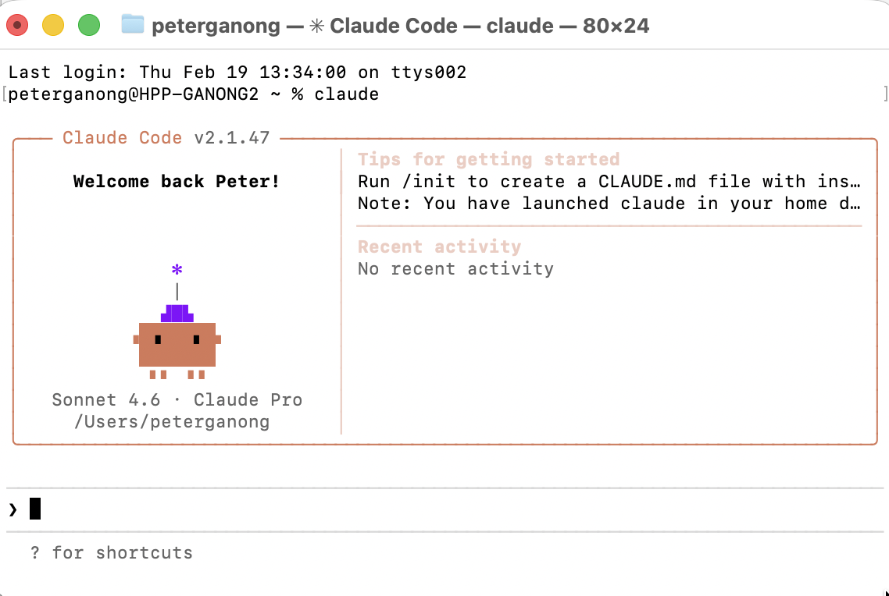
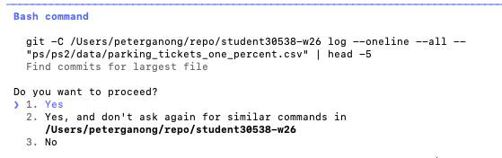

February 23, 2026
Too elementary (you already do this)
Too advanced (not our focus today)
A chatbot responds in text. You copy-paste its output into your work.
An agent acts on your computer. It can:
Term coined by Andrej Karpathy in February 2025:
“There’s a new kind of coding I call ‘vibe coding’, where you fully give in to the vibes, embrace exponentials, and forget that the code even exists.”
Note: At the moment, the most successful vibe coders are people with deep technical knowledge. More on this here. However, it is hard to forecast since everything is changing rapidly
“I ship code I don’t read.”
https://newsletter.pragmaticengineer.com/p/the-creator-of-clawd-i-ship-code
The GitHub Copilot coding agent is a direct competitor to Claude Code — assign it a GitHub Issue, and it opens a pull request with the fix.
As a student, you can get it for free through GitHub Education:
Key differences from Claude Code: runs in GitHub’s cloud (not your machine), operates on one issue at a time, and all changes come back as a pull request for you to review.
In all the other lectures, we were relatively opinionated about what you should do.
Here, our views are much less well-formed.
People are still working to understand what these tools can do, and what they should and shouldn’t be allowed to do.
CLAUDE.md — your persistent instructionsDownload Claude Code. At the moment, a subscription is $20/month.
Open a terminal, navigate to your project folder, and type:
That’s it. The agent is now running inside that folder.

The agent operates in one directory — the folder you started it in.
One way to do this is to:
By default, Claude asks for permission before running each terminal command.

Leave this setting on. We explain why in the Dangers section.
Agents have two modes:
Plan mode — Claude describes what it will do but does not act
Execute mode — Claude actually runs commands
Shift+TabCLAUDE.md — your persistent instructionsRun /init in Claude Code to create a CLAUDE.md file.
This file persists across sessions. Claude reads it every time it starts.
Use it to tell Claude:
CLAUDE.md — example# Project
Analyze housing prices by metro area
using Census ACS data. Output goes
in output/figures/.
# Style
- Use pandas and altair (not polars/seaborn)
- Use relative paths everywhere
- Commit only code and data under 10MB
# Avoid
- Do not delete files in data/raw/
- Do not push to git without askingWhy this matters
| Action | Shortcut |
|---|---|
| Exit Claude Code | /exit |
| Interrupt a running command | Ctrl+C |
| Toggle plan / execute mode | Shift+Tab |
| Get help | /help |
claude in your project folder to startCLAUDE.md to give the agent persistent instructionsGoal: Analyze how health insurance coverage changes after a cancer diagnosis — using ten years of a large public health survey.
My actual prompt
Set up a GitHub repo. Download the last ten years of the MEPS. Identify people who get cancer or other serious diagnoses. Write Python code to track how often they subsequently lose their jobs and health insurance. Follow people over time in the MEPS. Once done, make a single Quarto document with all code and findings, knit to PDF.
Lazy user prompt
analyze the meps data and make some charts about insurance loss after cancer, put it in a pdf
Claude’s hypothetical plan (before acting)
data/meps_pooled.csv; inspect columns and year rangeCANCERDX == 1)output/insurance_after_cancer.qmd and knit to PDFWaiting for approval before running any commands.
Step 1: Read the MEPS documentation to understand file structure
Step 2: Wrote a download script — fetched all ten years automatically
Step 3: Inspected the data, noticed that person identifiers changed format across years — fixed the merge key
Step 4: Ran the cleaning script — hit a missing package error, installed it, re-ran
Step 5: Identified newly diagnosed cancer patients using diagnosis codes
Step 6: Merged across survey rounds to track the same person over time
Step 7: Computed insurance loss rates by diagnosis severity
Step 8: Produced all main figures; noticed axis labels were inconsistent across plots — fixed them
Step 9: Wrote the Quarto document and knit it to PDF
Chatbot
Agent
Question: Can a TA — or an AI agent — reproduce last year’s final projects from scratch?
A project is replicable if someone else can:
.qmd fileWe gave the agent this task for six last-year final projects.
There are six student final projects linked from here
Are they reproducible? You should be able to knit the .qmd file and re-generate one version of the writeup (HTML or PDF).
For each project: 1. Check for a README. Download any data linked there. 2. Install required packages. 3. Knit the .qmd. Debug minor issues; stop after ~15 minutes. 4. Write a replication report to replication_reports/
.md
For each of the six projects, the agent:
.qmd file.qmdThen moved on to the next project.
| Project | Replicated? | Main blocker |
|---|---|---|
| Carjacking Analysis in Chicago | ✅ | — |
| Cooling Centers in DC | ✅ (minor fix) | Malformed YAML syntax |
| Gang Violence in El Salvador | ❌ | Hardcoded paths + missing shapefiles |
| Quality of Life Index | ❌ | Incomplete shapefile + hardcoded path |
| Transportation and Public Safety | ❌ | Data not in repo, no download link |
| Vacancies and Neighborhood Economics | ❌ | QMD formatting bug + hardcoded path |
2 of 6 replicated. All 6 are excellent projects — replication was simply not emphasized last year.
Four of six projects had paths like these hardcoded into their .qmd files:
raw_data_path = r"C:\Users\User\OneDrive - The University of Chicago\..."
base_directory = '/Users/francescaleon/Documents/dap2_final_project/...'
directory = r'C:\Users\laine\OneDrive\...'These work on the author’s machine and nowhere else.
Fix: use paths relative to the project folder:
Missing data files (2 projects)
.shp only, no .dbf, .prj, .cpg)Code syntax issues (2 projects)
{python eval=FALSE} instead of #| eval: false — Quarto ignores unknown options silently```{python} — Quarto treats the cell as markdown text, not codeThis year, full replicability is required.
Checklist:
/Users/... or C:\Users\....qmd without editing a single lineAn agent can help you check this before you submit.
A skill is a pre-built capability you can give an agent — like a plugin or an app.
Examples:
Skills extend what an agent can do beyond what’s built in.
Skills are declared in CLAUDE.md so the agent knows they are available.
# check_paths.py — replication checker skill
# Scans a .qmd file for hardcoded absolute paths
import re
from pathlib import Path
def run(qmd_path: str) -> str:
issues = []
lines = Path(qmd_path).read_text().splitlines()
for i, line in enumerate(lines, 1):
if re.search(r'/Users/\w+|C:\\Users\\', line):
issues.append(
f" Line {i}: {line.strip()[:55]}"
)
if issues:
return "Hardcoded paths found:\n" + "\n".join(issues)
return "No hardcoded paths found. ✓"What this skill does
.qmd file for hardcoded pathsWhy it matters
Skills are added by referencing them in your project configuration or via the agent’s skill management.
Before installing any skill, ask:
Important: this brings us to the next section.
Installing a skill is like installing any software package.
You are trusting that it does what it says.
Most skills are fine. But some are not. The next section explains how to protect yourself.
CLAUDE.md updated with key contextSomeone let an AI agent manage files on their computer. It deleted 15 years of family photos — every picture of his wife.
This is not hypothetical. It happened.
“A professor from another institution, coauthoring with a UChicago professor, let an agent do a little bit too much. Specifically, they let an agent loose on the entire codebase. Did git save them? No, data was not saved with git!”
— Anecdote from an economics researcher at Booth
There’s a setting — on by default — that requires your approval before every terminal command.
Leave it on.
The --dangerously-skip-permissions flag exists and some people use it. Here’s why that’s risky.
Do not use it unless you know exactly what you are doing.
A “white hat” researcher demonstrated a real attack:
In 2023, Samsung engineers pasted proprietary source code and internal meeting transcripts into ChatGPT to get help debugging.
The data was sent to OpenAI’s servers — and potentially used to train future models.
Samsung banned ChatGPT company-wide shortly after.
The same risk applies to your work:
Use AI tools with caution when working with sensitive data. Make sure that it can’t leak your data.
Key question: if I see the output, can I adequately judge whether it’s right?